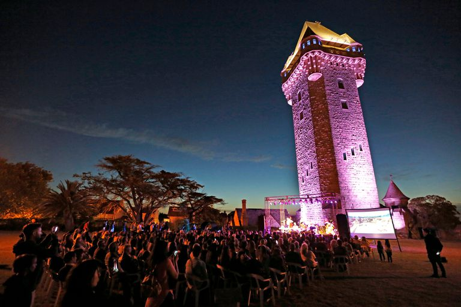
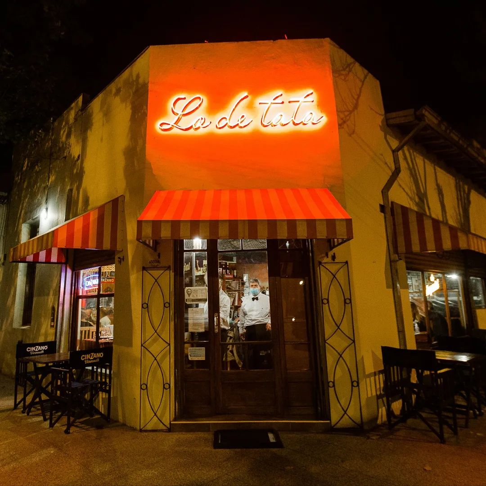
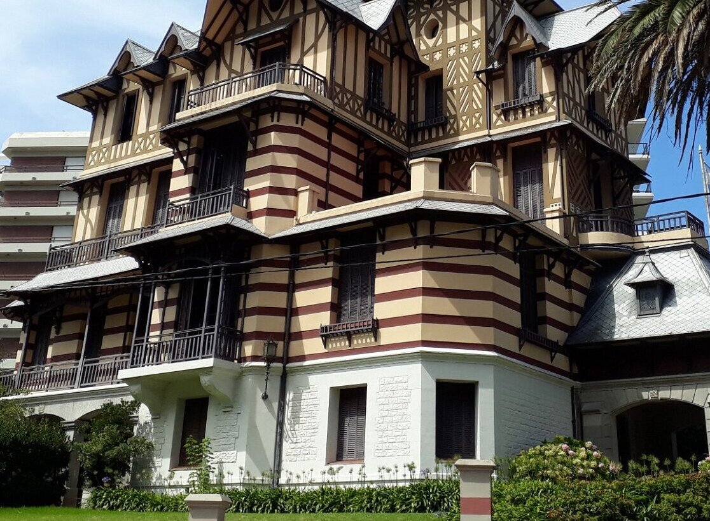
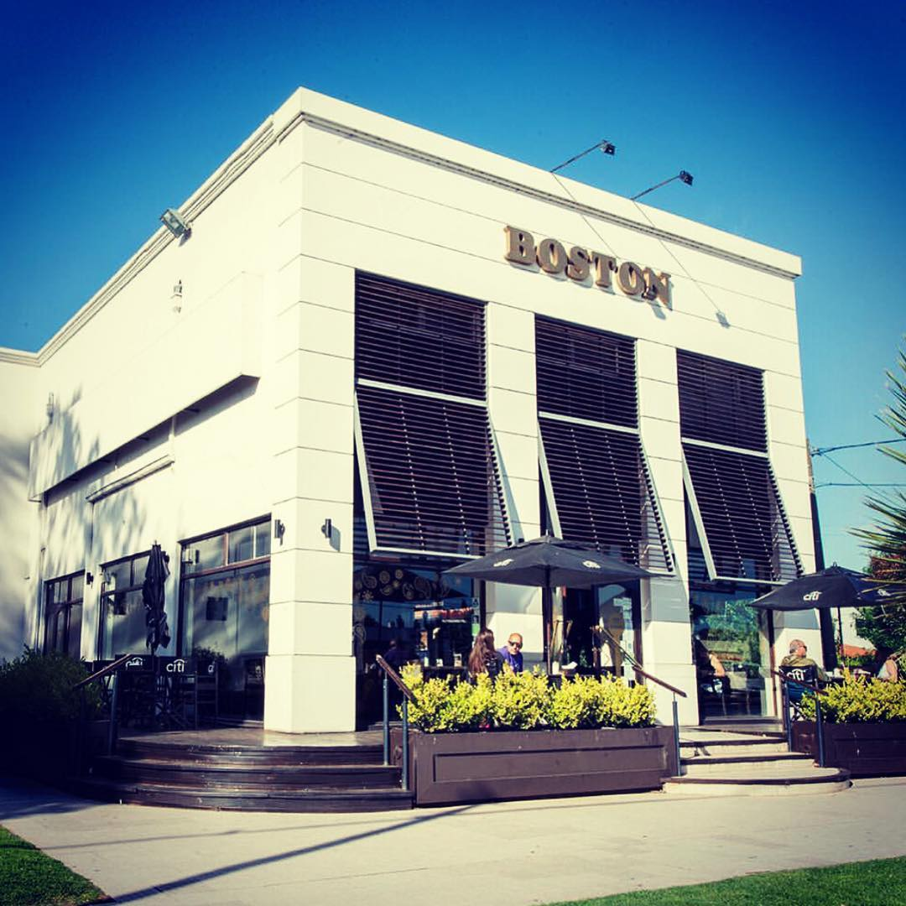

Tour museo
Recorrido
- Entrada a la "Torre Tanque".
- Almuerzo en "Lo de Tata".
- Visita al "Museo Municipal de Arte Juan Carlos Castagnino".
- Merienda en "La Boston Confitería" (Café de especialidad).
Torre Tanque

Foto sacada por Julieta Escat, página Billiken
La “Torre Tanque” fue construida gracias a un llamado a concurso de anteproyectos en 1943 para satisfacer las necesidades de agua. Fue declarada “Monumento Histórico Arquitectónico Nacional” por ser un emblema de la ciudad. Está ubicada en el sector más alto de la ciudad de Mar del Plata. Hoy en día los agentes de promoción de “Obras Sanitarias S.E.” brindan información acerca del funcionamiento de la “Torre Tanque”, su historia y la operatividad del sistema de abastecimiento de agua en la zona. El objetivo de la atención al público reside en que todos puedan tener acceso a esta reliquia histórica de la ciudad, que simboliza la llegada del agua corriente a Mar del Plata. La Torre Tanque tiene una altura de 88 metros. El tanque tiene una capacidad de 500.000 litros de agua potable, aunque la cantidad de los depósitos de reserva al pie de la torre tiene 13.000.000 de litros. El lugar tiene una de las mejores vistas de Mar del Plata, ya que tiene los cuatro puntos cardinales al alcance, lo que permite contemplar los paisajes más bellos de la ciudad.
Lo De Tata Restaurante

Foto sacada del instagram de "Lo De Tata"
Lo de Tata. La tradicional cantina de Mar del Plata que trabaja con pescados enteros en vez de filetes. Lisandro Ciarlotti es el cocinero y propietario del restaurante que ocupa una esquina del barrio Chauvín. Recurre a la pesca de anzuelo que recibe fresca cada mañana. Es uno de los pocos lugares de la ciudad atlántica donde el pescado llega a la mesa con sus valores originales intactos, resultado de la pesca de anzuelo y con toda la frescura de la reciente captura. El artífice de Lo de Tata recurre a dicho método para garantizar que, cada día, las piezas cobradas a las aguas del Mar Argentino lleguen sanas y enteras a la cocina: mero, chernia, merluzones, salmones blancos y, cuando es temporada, pez limón. El ambiente es alegre y ecléctico, bien de cantina: redes que cuelgan, recuerdos familiares y viejas publicidades.
Museo Municipal de Arte Juan Carlos Castagnino

Foto sacada por la gerencia en la página de Tripadvisor
Esta residencia veraniega constituye uno de los últimos testimonios de la arquitectura pintoresquista de principios del siglo XX en Mar del Plata. Lleva el nombre de la familia propietaria, los Ortiz Basualdo. El edificio fue proyectado en 1909 por los arquitectos Luis Dubois y Pablo Pater y construido por Leandro Bianchini, siguiendo las corrientes estilísticas inspiradas en los castillos de Loire (Francia). Se destacaba como una de las construcciones más importantes de la loma Stella Maris en la avenida Colón. La irregularidad volumétrica lograda, los diseños geométricos de “pan de bois” para la fachada y los techos de tejas de zinc con cresterías y pináculos, le otorgaron un mayor efecto pintoresco y la jerarquización entre las distintas casonas del lugar. Su ubicación en la Villa Ortiz Basualdo data del año 1980. Desde entonces, realiza sus actividades en forma ininterrumpida en este edificio, ocupando las salas de planta baja, segundo y tercer piso en distintas etapas. El Museo de Arte lleva el nombre de Juan Carlos Castagnino, a partir de 1982 como homenaje a este gran maestro de la plástica nacido en Mar del Plata.
Confiteria Boston

Foto sacada por la confiteria Boston en Facebook
La Confitería Boston, en Mar del Plata desde 1958, de fama internacional. El crecimiento de la compañía fue meteórico y llegó a tener seis sucursales en la ciudad, en los principales puntos turísticos. Algunos de sus slogans más conocidos fueron "El estilo inconfundible de Confitería Boston" y "La Confitería de las Cosas Buenas". En noviembre de 2001 la Confitería Boston ocupó el espacio gastronómico por excelencia del shopping “Paseo Diagonal”, con una moderna cafetería. Luego, en 2006, llegó el local del shopping Los Gallegos, otro símbolo de Mar del Plata.
Hora de inicio
11:00 A.M.
Duración
6 horas.
Incluye
- Recogida y traslado de regreso al hotel seleccionado.
- Transporte en micro.
- Guía en español.
Precio
$3000.
¿Cuándo reservar?
Se permiten reservas hasta 12 horas antes.
Accesibilidad
No es accesible en silla de ruedas.